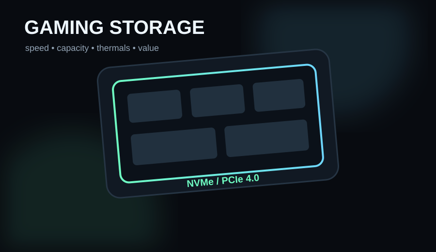

The Samsung 990 Pro is the cleaner all-round recommendation when prices are close: up to 7,450 MB/s reads, strong software support and excellent PCIe 4.0 performance. The WD Black SN850X is just as credible for gaming and becomes the smarter buy whenever it is meaningfully cheaper or its heatsink version better fits your PS5 plan.
- You want a high-end PCIe 4.0 drive for PC or PS5
- You care about mature firmware, software and warranty support
- You are comparing real sale prices rather than chasing a tiny benchmark win
- Your system only supports PCIe 3.0 and you will not reuse the drive later
- A cheaper TLC Gen4 SSD is substantially less expensive
- You are expecting a premium SSD to add large FPS gains
Key specs & facts
| Samsung 990 Pro 2TB | Up to 7,450 / 6,900 MB/s sequential read/write |
|---|---|
| WD Black SN850X 2TB | Up to 7,300 / 6,600 MB/s sequential read/write |
| Interface | PCIe 4.0 x4 NVMe |
| 2TB endurance | 1,200 TBW class |
| Warranty | 5 years (subject to endurance limits) |
These are both mature high-end Gen4 drives
The 990 Pro and SN850X sit near the practical ceiling of PCIe 4.0 gaming storage. Samsung rates the 2TB 990 Pro at up to 7,450 MB/s sequential read and 6,900 MB/s write. SanDisk's current WD Black SN850X data sheet lists the 2TB model at up to 7,300 MB/s read and 6,600 MB/s write.
Those numbers matter for large transfers and show how close both drives run to the interface limit, but game loading is not decided by sequential throughput alone. Random performance, firmware, the game engine and the rest of the system all matter.
Samsung 990 Pro: the straightforward premium pick
The 990 Pro uses Samsung's in-house controller, TLC V-NAND and DRAM cache. Samsung lists PC and PlayStation 5 use, offers heatsink and bare variants, and supports the drive through Samsung Magician. Tom's Hardware still names the 990 Pro its best overall and best gaming SSD in its 2026 guide.
That does not mean it is automatically worth a large premium. The reason to buy it is the combination of performance, mature software, broad availability and a strong track record—not a promise that your games will suddenly gain frames per second.
WD Black SN850X: buy it when the price is better
The SN850X remains one of the strongest alternatives. The 2TB model is rated for up to 7,300/6,600 MB/s sequential performance and 1,200 TBW endurance, with a five-year limited warranty. Heatsink variants are available, which is useful for PS5 buyers who want an all-in-one install.
Tom's Hardware currently lists the SN850X as the main alternative to the 990 Pro and also its top PS5 SSD pick. If it is meaningfully cheaper on the day you buy, there is little reason to pay extra simply to own the Samsung name.
For PS5, get the cooling right
Sony's console needs an M.2 SSD that meets its physical and performance requirements, and a heatsink is part of a sensible installation. Buy a heatsink version or add a compatible heatsink rather than running a bare high-performance drive in a confined slot.
For PC, check the motherboard slot
A Gen4 drive works in many older M.2 systems, but the slot can limit performance. Also check whether using a specific M.2 slot disables SATA ports or shares chipset lanes on your motherboard. The SSD cannot fix a platform bottleneck.
Verdict
Buy the 990 Pro when the price gap is small and you want the safest premium all-rounder. Buy the SN850X when it is cheaper, when the heatsink package suits your console, or when you simply prefer WD's ecosystem. Both are fast enough that capacity, price and cooling should decide the purchase before tiny benchmark differences.
Capacity usually matters more than the benchmark winner
For a gaming library, a 2TB model with enough free space is often a better purchase than paying a large premium for a slightly faster 1TB flagship. Compare like-for-like capacity and heatsink configuration. Our 2TB gaming SSD guide adds the Crucial T500 as a third price check.

Samsung 990 Pro 2TB
Excellent all-round Gen4 performance with Samsung Magician support and PC/PS5 positioning.

WD Black SN850X 2TB
A top-tier Gen4 alternative that is especially attractive when the heatsink version or sale price is better.
Crucial T500 2TB
Another high-end TLC Gen4 option worth checking when it undercuts both headline picks.
Amazon prices and availability change frequently, so we show a current Amazon UK link rather than copying a price that may be stale.
Best 2TB Gaming SSDs in 2026: Three PCIe 4.0 Drives Worth Buying
Read next →
Best Budget Gaming Monitor Upgrades: What To Buy Before You Waste Money
Read next →
ASUS VY279HGR Review: A Cheap 27-inch Gaming Monitor That Makes Sense at the Right Price
Read next →Sources
Key specifications and factual claims are checked against manufacturer or primary-source material where available.
About this article
This page is a researched guide or comparison, not a claim of hands-on testing unless we explicitly say otherwise. Product specifications and availability can change, so important buying details are checked against current source material when the article is updated. Affiliate availability does not determine the underlying recommendation.